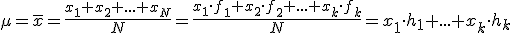
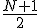
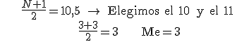
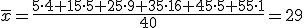
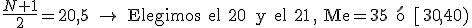

medidas de centralización


| xi | fi |
| 0 | 1 |
| 1 | 2 |
| 2 | 6 |
| 3 | 6 |
| 4 | 3 |
| 5 | 2 |

Mo = 2 y 3
Ejemplo 2. Preguntamos a 40 personas sobre el número de veces que fueron al cine el último año:
3, 15, 24, 28, 33, 35, 38, 42, 43, 38, 36, 34, 29, 25, 17, 7, 34, 36, 39, 44, 31, 26, 20, 11, 13, 22, 27, 47, 39, 37, 34, 2, 35, 28, 38, 41, 58, 15, 32, 9
| Ii | marca de clase | fi |
| [0,10) | 5 | 2 |
| [10,20) | 15 | 6 |
| [20,30) | 25 | 9 |
| [30,40) | 35 | 17 |
| [40,50) | 45 | 5 |
| [50,60) | 55 | 1 |
| Σ | 40 |


Mo = 35 ó [30,40)
Ejercicios
1.- Hacemos una encuesta a los 50 alumnos de 4º de ESO sobre el número de horas que pasan mirando el móvil al día y los resultados son:
| xi | fi |
| 0 | 2 |
| 1 | 7 |
| 2 | 8 |
| 3 | 7 |
| 4 | 8 |
| 5 | 10 |
| 6 | 5 |
| 7 | 3 |
| ∑ | 50 |
Calcula su media, mediana y moda.
2.- Preguntamos a 25 alumnos de 1º de Bachillerato sobre sus gastos semanales y estas fueron sus respuestas:
| Ii | marca de clase | fi |
| [20,30) | 25 | 5 |
| [30,40) | 35 | 8 |
| [40,50) | 45 | 4 |
| [50,60) | 55 | 1 |
| [60,70) | 65 | 4 |
| [70,80) | 75 | 0 |
| [80,90) | 85 | 3 |
| Σ | 25 |
Calcula la media, la mediana y la moda
Soluciones:
1.- media=3,54; mediana=3; moda=5
2.- media=46,2; mediana=35; moda=35
Obra publicada con Licencia Creative Commons Reconocimiento No comercial Compartir igual 4.0